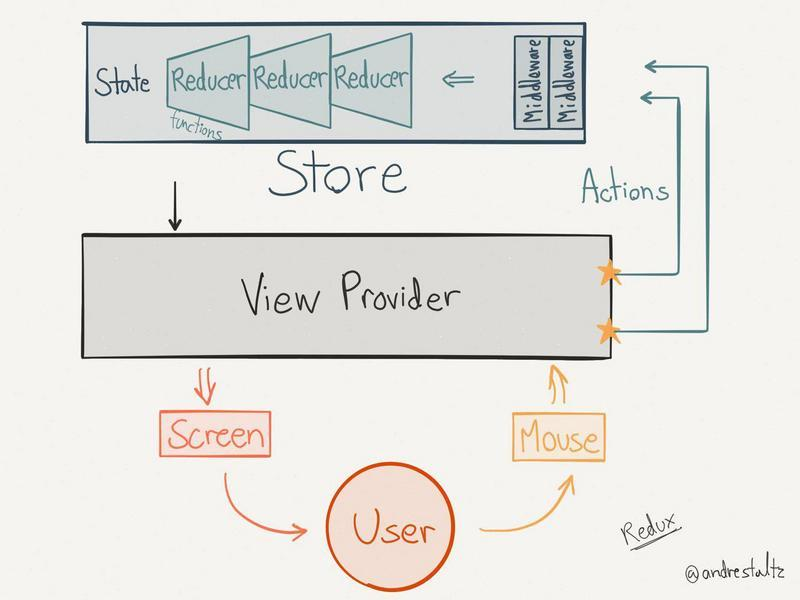

<!DOCTYPE html>
<html lang="en">

<!-- Head tag -->
<head><meta name="generator" content="Hexo 3.8.0">
    <meta charset="utf-8">
    <meta http-equiv="X-UA-Compatible" content="IE=edge">
    <meta name="google-site-verification" content="xBT4GhYoi5qRD5tr338pgPM5OWHHIDR6mNg1a3euekI">
    <meta name="viewport" content="width=device-width, initial-scale=1">
    <meta name="description" content>
    <meta name="keyword" content>
    <link rel="shortcut icon" href="/codinglobster-blog/img/favicon.ico">

    <title>
        
          redux-source-code-read - Jeff的博客 | Jeff&#39;s Blog
        
    </title>

    <link rel="canonical" href="https://codinglobster.github.io/codinglobster-blog/2018/07/01/redux-source-code-read/">

    <!-- Bootstrap Core CSS -->
    <link rel="stylesheet" href="/codinglobster-blog/css/bootstrap.min.css">

    <!-- Custom CSS -->
    <link rel="stylesheet" href="/codinglobster-blog/css/hux-blog.min.css">

    <!-- Pygments Highlight CSS -->
    <link rel="stylesheet" href="/codinglobster-blog/css/highlight.css">

    <!-- Custom Fonts -->
    <!-- <link href="https://maxcdn.bootstrapcdn.com/font-awesome/4.3.0/css/font-awesome.min.css" rel="stylesheet" type="text/css"> -->
    <!-- Hux change font-awesome CDN to qiniu -->
    <link href="https://cdn.staticfile.org/font-awesome/4.5.0/css/font-awesome.min.css" rel="stylesheet" type="text/css">


    <!-- Hux Delete, sad but pending in China
    <link href='http://fonts.googleapis.com/css?family=Lora:400,700,400italic,700italic' rel='stylesheet' type='text/css'>
    <link href='http://fonts.googleapis.com/css?family=Open+Sans:300italic,400italic,600italic,700italic,800italic,400,300,600,700,800' rel='stylesheet' type='text/
    css'>
    -->


    <!-- HTML5 Shim and Respond.js IE8 support of HTML5 elements and media queries -->
    <!-- WARNING: Respond.js doesn't work if you view the page via file:// -->
    <!--[if lt IE 9]>
        <script src="https://oss.maxcdn.com/libs/html5shiv/3.7.0/html5shiv.js"></script>
        <script src="https://oss.maxcdn.com/libs/respond.js/1.4.2/respond.min.js"></script>
    <![endif]-->

    <!-- ga & ba script hoook -->
    <script></script>
</head>


<!-- hack iOS CSS :active style -->
<body ontouchstart="">

    <!-- Navigation -->
<nav class="navbar navbar-default navbar-custom navbar-fixed-top">
    <div class="container-fluid">
        <!-- Brand and toggle get grouped for better mobile display -->
        <div class="navbar-header page-scroll">
            <button type="button" class="navbar-toggle">
                <span class="sr-only">Toggle navigation</span>
                <span class="icon-bar"></span>
                <span class="icon-bar"></span>
                <span class="icon-bar"></span>
            </button>
            <a class="navbar-brand" href="/codinglobster-blog/">codinglobster&#39;s Blog</a>
        </div>

        <!-- Collect the nav links, forms, and other content for toggling -->
        <!-- Known Issue, found by Hux:
            <nav>'s height woule be hold on by its content.
            so, when navbar scale out, the <nav> will cover tags.
            also mask any touch event of tags, unfortunately.
        -->
        <div id="huxblog_navbar">
            <div class="navbar-collapse">
                <ul class="nav navbar-nav navbar-right">
                    <li>
                        <a href="/codinglobster-blog/">Home</a>
                    </li>

                    

                        
                    

                        
                        <li>
                            <a href="/codinglobster-blog/about/">About</a>
                        </li>
                        
                    

                        
                        <li>
                            <a href="/codinglobster-blog/archives/">Archives</a>
                        </li>
                        
                    

                        
                        <li>
                            <a href="/codinglobster-blog/tags/">Tags</a>
                        </li>
                        
                    
                    
                </ul>
            </div>
        </div>
        <!-- /.navbar-collapse -->
    </div>
    <!-- /.container -->
</nav>
<script>
    // Drop Bootstarp low-performance Navbar
    // Use customize navbar with high-quality material design animation
    // in high-perf jank-free CSS3 implementation
    var $body   = document.body;
    var $toggle = document.querySelector('.navbar-toggle');
    var $navbar = document.querySelector('#huxblog_navbar');
    var $collapse = document.querySelector('.navbar-collapse');

    $toggle.addEventListener('click', handleMagic)
    function handleMagic(e){
        if ($navbar.className.indexOf('in') > 0) {
        // CLOSE
            $navbar.className = " ";
            // wait until animation end.
            setTimeout(function(){
                // prevent frequently toggle
                if($navbar.className.indexOf('in') < 0) {
                    $collapse.style.height = "0px"
                }
            },400)
        }else{
        // OPEN
            $collapse.style.height = "auto"
            $navbar.className += " in";
        }
    }
</script>


    <!-- Main Content -->
    
<!-- Image to hack wechat -->
<!--  -->
<!--  -->

<!-- Post Header -->
<style type="text/css">
    header.intro-header{
        background-image: url('redux-bg.png')
    }
</style>
<header class="intro-header">
    <div class="container">
        <div class="row">
            <div class="col-lg-8 col-lg-offset-2 col-md-10 col-md-offset-1">
                <div class="post-heading">
                    <div class="tags">
                        
                          <a class="tag" href="/codinglobster-blog/tags/#react" title="react">react</a>
                        
                          <a class="tag" href="/codinglobster-blog/tags/#redux" title="redux">redux</a>
                        
                    </div>
                    <h1>redux-source-code-read</h1>
                    <h2 class="subheading">redux源码试探阅读</h2>
                    <span class="meta">
                        Posted by codinglobster on
                        2018-07-01
                    </span>
                </div>
            </div>
        </div>
    </div>
</header>

<!-- Post Content -->
<article>
    <div class="container">
        <div class="row">

    <!-- Post Container -->
            <div class="
                col-lg-8 col-lg-offset-2
                col-md-10 col-md-offset-1
                post-container">

                <h1 id="Redux-源码解析"><a href="#Redux-源码解析" class="headerlink" title="Redux 源码解析"></a>Redux 源码解析</h1><h2 id="redux的作用"><a href="#redux的作用" class="headerlink" title="redux的作用"></a>redux的作用</h2><p></p>
<p>没有统一的数据处理，数据在组件中不断传递，很多时候无法准确的定位程序在哪里出错了。<br>而使用redux将需要统一处理的数据交由store管理，state只能通过dispatch来修改，并且修改过后统一通知，这样数据的变化变得可追溯，数据变化后的变化也可预测。</p>
<h2 id="为什么不使用context"><a href="#为什么不使用context" class="headerlink" title="为什么不使用context"></a>为什么不使用context</h2><figure class="highlight js"><table><tr><td class="gutter"><pre><span class="line">1</span><br><span class="line">2</span><br><span class="line">3</span><br><span class="line">4</span><br><span class="line">5</span><br><span class="line">6</span><br><span class="line">7</span><br><span class="line">8</span><br><span class="line">9</span><br><span class="line">10</span><br><span class="line">11</span><br><span class="line">12</span><br><span class="line">13</span><br><span class="line">14</span><br></pre></td><td class="code"><pre><span class="line"><span class="keyword">const</span> PropTypes = <span class="built_in">require</span>(<span class="string">'prop-types'</span>);</span><br><span class="line"></span><br><span class="line"><span class="class"><span class="keyword">class</span> <span class="title">MediaQuery</span> <span class="keyword">extends</span> <span class="title">React</span>.<span class="title">Component</span> </span>&#123;</span><br><span class="line">  ...</span><br><span class="line">  <span class="comment">// 如果在shouldComponentUpdate返回为空则改方法不会触发，子组件context不会刷新</span></span><br><span class="line">  getChildContext() &#123;</span><br><span class="line">    <span class="keyword">return</span> &#123;<span class="attr">type</span>: <span class="keyword">this</span>.state.type&#125;;</span><br><span class="line">  &#125;</span><br><span class="line">  ...</span><br><span class="line">&#125;</span><br><span class="line"></span><br><span class="line">MediaQuery.childContextTypes = &#123;</span><br><span class="line">  type: PropTypes.string</span><br><span class="line">&#125;;</span><br></pre></td></tr></table></figure>
<p>使用context的限制在于声明周期，如果一个数据中间组件负责转发context，但是shouldComponentUpdate声明周期中返回false就会导致接受context的子组件无法刷新。</p>
<h2 id="原作者对于redux的解释"><a href="#原作者对于redux的解释" class="headerlink" title="原作者对于redux的解释"></a>原作者对于redux的解释</h2><p></p>
<h2 id="三个概念"><a href="#三个概念" class="headerlink" title="三个概念"></a>三个概念</h2><ol>
<li>dispatch 可追溯数据流模式（单向数据流）</li>
<li>middleware 中间件模式（为dispatch增加更多的可能性）</li>
<li>snapshot 快照模式（管理订阅）</li>
</ol>
<h2 id="目录结构"><a href="#目录结构" class="headerlink" title="目录结构"></a>目录结构</h2><figure class="highlight stylus"><table><tr><td class="gutter"><pre><span class="line">1</span><br><span class="line">2</span><br><span class="line">3</span><br><span class="line">4</span><br><span class="line">5</span><br><span class="line">6</span><br><span class="line">7</span><br><span class="line">8</span><br><span class="line">9</span><br><span class="line">10</span><br></pre></td><td class="code"><pre><span class="line">├── applyMiddleware.js</span><br><span class="line">├── bindActionCreators.js</span><br><span class="line">├── combineReducers.js</span><br><span class="line">├── compose.js</span><br><span class="line">├── createStore.js</span><br><span class="line">├── index.js</span><br><span class="line">└── utils</span><br><span class="line">    ├── actionTypes.js</span><br><span class="line">    ├── isPlainObject.js</span><br><span class="line">    └── warning.js</span><br></pre></td></tr></table></figure>
<h2 id="工具类介绍"><a href="#工具类介绍" class="headerlink" title="工具类介绍"></a>工具类介绍</h2><ul>
<li><strong>actionTypes</strong> (redux内部使用变量，防止局部出现重复名称)</li>
<li><strong>warning</strong> (如果环境存在console.error则将错误打印在控制台，如果没有，则将异常抛出，配合break all on exceptions可以在抛出错误行暂停)</li>
<li><strong>isPlainObject</strong> (判断一个对象是否是简单对象，简单对象的定义就是他的原型链只有一层)</li>
</ul>
<hr>
<h2 id="从createStore开始"><a href="#从createStore开始" class="headerlink" title="从createStore开始"></a>从createStore开始</h2><figure class="highlight js"><table><tr><td class="gutter"><pre><span class="line">1</span><br><span class="line">2</span><br><span class="line">3</span><br><span class="line">4</span><br><span class="line">5</span><br><span class="line">6</span><br><span class="line">7</span><br><span class="line">8</span><br><span class="line">9</span><br><span class="line">10</span><br><span class="line">11</span><br><span class="line">12</span><br><span class="line">13</span><br><span class="line">14</span><br><span class="line">15</span><br><span class="line">16</span><br><span class="line">17</span><br><span class="line">18</span><br><span class="line">19</span><br><span class="line">20</span><br><span class="line">21</span><br><span class="line">22</span><br><span class="line">23</span><br><span class="line">24</span><br></pre></td><td class="code"><pre><span class="line"><span class="keyword">export</span> <span class="keyword">default</span> <span class="function"><span class="keyword">function</span> <span class="title">createStore</span>(<span class="params">reducer, preloadedState, enhancer</span>) </span>&#123;</span><br><span class="line"></span><br><span class="line">  <span class="keyword">let</span> currentReducer = reducer <span class="comment">// 输入一个state，返回一个新的state</span></span><br><span class="line">  <span class="keyword">let</span> currentState = preloadedState <span class="comment">// store的state</span></span><br><span class="line">  <span class="keyword">let</span> currentListeners = [] <span class="comment">// store订阅的监听器</span></span><br><span class="line">  <span class="keyword">let</span> nextListeners = currentListeners <span class="comment">// 用于注册监听器的容器</span></span><br><span class="line">  <span class="keyword">let</span> isDispatching = <span class="literal">false</span> <span class="comment">// 判断当前是否存在dispatch操作</span></span><br><span class="line"></span><br><span class="line">  <span class="function"><span class="keyword">function</span> <span class="title">ensureCanMutateNextListeners</span>(<span class="params"></span>)</span>&#123;&#125;</span><br><span class="line">  <span class="function"><span class="keyword">function</span> <span class="title">getState</span>(<span class="params"></span>) </span>&#123;&#125;</span><br><span class="line">  <span class="function"><span class="keyword">function</span> <span class="title">subscribe</span>(<span class="params">listener</span>) </span>&#123;&#125;</span><br><span class="line">  <span class="function"><span class="keyword">function</span> <span class="title">dispatch</span>(<span class="params">action</span>) </span>&#123;&#125;</span><br><span class="line">  <span class="function"><span class="keyword">function</span> <span class="title">replaceReducer</span>(<span class="params">nextReducer</span>) </span>&#123;&#125;</span><br><span class="line">  <span class="function"><span class="keyword">function</span> <span class="title">observable</span>(<span class="params"></span>) </span>&#123;&#125;</span><br><span class="line"></span><br><span class="line">  dispatch(&#123; <span class="attr">type</span>: ActionTypes.INIT &#125;)</span><br><span class="line"></span><br><span class="line">  <span class="keyword">return</span> &#123;</span><br><span class="line">    dispatch,</span><br><span class="line">    subscribe,</span><br><span class="line">    getState,</span><br><span class="line">    replaceReducer,</span><br><span class="line">    [$$observable]: observable</span><br><span class="line">  &#125;</span><br></pre></td></tr></table></figure>
<p><strong>store</strong>中的变量共五个，<strong>currentReducer</strong>负责dispatch后重新计算state，<strong>preloadedState</strong>负责默认初始的state的值，<strong>currentListeners</strong>和<strong>nextListeners</strong>负责管理订阅的函数，<strong>isDispatching</strong>则是起到判断边界的作用，dispatch使用也是有一定的限制。</p>
<p>核心代码应该算是dispatch了吧<br><figure class="highlight js"><table><tr><td class="gutter"><pre><span class="line">1</span><br><span class="line">2</span><br><span class="line">3</span><br><span class="line">4</span><br><span class="line">5</span><br><span class="line">6</span><br><span class="line">7</span><br><span class="line">8</span><br><span class="line">9</span><br><span class="line">10</span><br><span class="line">11</span><br><span class="line">12</span><br><span class="line">13</span><br><span class="line">14</span><br><span class="line">15</span><br><span class="line">16</span><br><span class="line">17</span><br><span class="line">18</span><br><span class="line">19</span><br><span class="line">20</span><br><span class="line">21</span><br><span class="line">22</span><br><span class="line">23</span><br><span class="line">24</span><br><span class="line">25</span><br><span class="line">26</span><br><span class="line">27</span><br><span class="line">28</span><br><span class="line">29</span><br><span class="line">30</span><br><span class="line">31</span><br><span class="line">32</span><br><span class="line">33</span><br><span class="line">34</span><br><span class="line">35</span><br></pre></td><td class="code"><pre><span class="line"><span class="function"><span class="keyword">function</span> <span class="title">dispatch</span>(<span class="params">action</span>) </span>&#123;</span><br><span class="line">  <span class="comment">// action必须是简单对象</span></span><br><span class="line">  <span class="keyword">if</span> (!isPlainObject(action)) &#123;</span><br><span class="line">    <span class="keyword">throw</span> <span class="keyword">new</span> <span class="built_in">Error</span>(</span><br><span class="line">      <span class="string">'Actions must be plain objects. '</span> +</span><br><span class="line">        <span class="string">'Use custom middleware for async actions.'</span></span><br><span class="line">    )</span><br><span class="line">  &#125;</span><br><span class="line">  <span class="comment">// action 必须有type</span></span><br><span class="line">  <span class="keyword">if</span> (<span class="keyword">typeof</span> action.type === <span class="string">'undefined'</span>) &#123;</span><br><span class="line">    <span class="keyword">throw</span> <span class="keyword">new</span> <span class="built_in">Error</span>(</span><br><span class="line">      <span class="string">'Actions may not have an undefined "type" property. '</span> +</span><br><span class="line">        <span class="string">'Have you misspelled a constant?'</span></span><br><span class="line">    )</span><br><span class="line">  &#125;</span><br><span class="line">  <span class="comment">// 同一时间，dispatch不能同时进行</span></span><br><span class="line">  <span class="keyword">if</span> (isDispatching) &#123;</span><br><span class="line">    <span class="keyword">throw</span> <span class="keyword">new</span> <span class="built_in">Error</span>(<span class="string">'Reducers may not dispatch actions.'</span>)</span><br><span class="line">  &#125;</span><br><span class="line"></span><br><span class="line">  <span class="keyword">try</span> &#123;</span><br><span class="line">    isDispatching = <span class="literal">true</span> <span class="comment">// 标记开始，其它dispatch不能在进行派发</span></span><br><span class="line">    currentState = currentReducer(currentState, action)<span class="comment">// 通过reducer重新计算新的state</span></span><br><span class="line">  &#125; <span class="keyword">finally</span> &#123;</span><br><span class="line">    isDispatching = <span class="literal">false</span> <span class="comment">// 派发完毕</span></span><br><span class="line">  &#125;</span><br><span class="line">  <span class="comment">// 计算完成后，将所有注册的listeners运行一遍</span></span><br><span class="line">  <span class="keyword">const</span> listeners = (currentListeners = nextListeners)</span><br><span class="line">  <span class="keyword">for</span> (<span class="keyword">let</span> i = <span class="number">0</span>; i &lt; listeners.length; i++) &#123;</span><br><span class="line">    <span class="keyword">const</span> listener = listeners[i]</span><br><span class="line">    listener()</span><br><span class="line">  &#125;</span><br><span class="line"></span><br><span class="line">  <span class="keyword">return</span> action</span><br><span class="line">&#125;</span><br></pre></td></tr></table></figure></p>
<p>结合作者的示意图，redux的流程就算是相当的清楚了吧。</p>
<p><code>dispatch action &gt;&gt; state change &gt;&gt; view change</code></p>
<h2 id="combineReducer"><a href="#combineReducer" class="headerlink" title="combineReducer"></a>combineReducer</h2><p>函数的作用是将多个reducer组合起来，并为每个reducer分配对应key值的namespace，更重要的是通过三次判断，判断传入的reducer是否符合规范</p>
<ol>
<li><p><strong><em>assertReducerShape</em></strong></p>
<ul>
<li>reducerstate必须有默认值，并且不能使用内部的actionTypes，</li>
</ul>
</li>
<li><p><strong><em>getUnexpectedStateShapeWarningMessage</em></strong>（组装好的re）</p>
<ul>
<li>对当前dispatch进行判断，是第一次dispatch</li>
<li>对redecuer对象的长度进行判断</li>
<li>state必须是简单对象</li>
<li>state的key和reducer的key进行比较，找出无效的Key<br>这个操作对replace操作是无效的，因为替换reducer就可能会导致key值得变化</li>
</ul>
</li>
<li><strong><em>getUndefinedStateErrorMessage</em></strong><ul>
<li>对传入的state取对应的值，并经过reducer处理后返回undefined的，进行报错处理<figure class="highlight livescript"><table><tr><td class="gutter"><pre><span class="line">1</span><br><span class="line">2</span><br><span class="line">3</span><br></pre></td><td class="code"><pre><span class="line">`Given $&#123;actionDescription&#125;, reducer <span class="string">"$&#123;key&#125;"</span> returned <span class="literal">undefined</span>. ` +</span><br><span class="line">`To ignore an action, you must explicitly <span class="keyword">return</span> the previous state. ` +</span><br><span class="line">`If you want <span class="keyword">this</span> reducer <span class="keyword">to</span> hold <span class="literal">no</span> value, you can <span class="keyword">return</span> <span class="literal">null</span> instead <span class="keyword">of</span> <span class="literal">undefined</span>.`</span><br></pre></td></tr></table></figure>
</li>
</ul>
</li>
</ol>
<h2 id="actionCreater"><a href="#actionCreater" class="headerlink" title="actionCreater"></a>actionCreater</h2><p>作用就是返回一个action<br><figure class="highlight js"><table><tr><td class="gutter"><pre><span class="line">1</span><br><span class="line">2</span><br><span class="line">3</span><br></pre></td><td class="code"><pre><span class="line"><span class="keyword">export</span> <span class="function"><span class="keyword">function</span> <span class="title">addTodo</span>(<span class="params">text</span>) </span>&#123; </span><br><span class="line">    <span class="keyword">return</span> &#123; <span class="attr">type</span>: ADD_TODO, text &#125; </span><br><span class="line">&#125;</span><br></pre></td></tr></table></figure></p>
<p>redux-<strong>bindActionCreators</strong></p>
<figure class="highlight js"><table><tr><td class="gutter"><pre><span class="line">1</span><br><span class="line">2</span><br><span class="line">3</span><br><span class="line">4</span><br><span class="line">5</span><br></pre></td><td class="code"><pre><span class="line"><span class="function"><span class="keyword">function</span> <span class="title">bindActionCreator</span>(<span class="params">actionCreator, dispatch</span>) </span>&#123;</span><br><span class="line">  <span class="keyword">return</span> <span class="function"><span class="keyword">function</span>(<span class="params"></span>) </span>&#123;</span><br><span class="line">    <span class="keyword">return</span> dispatch(actionCreator.apply(<span class="keyword">this</span>, <span class="built_in">arguments</span>))</span><br><span class="line">  &#125;</span><br><span class="line">&#125;</span><br></pre></td></tr></table></figure>
<p>berfore<br><figure class="highlight js"><table><tr><td class="gutter"><pre><span class="line">1</span><br></pre></td><td class="code"><pre><span class="line">store.dispath(addTodo(text))</span><br></pre></td></tr></table></figure></p>
<p>after<br><figure class="highlight js"><table><tr><td class="gutter"><pre><span class="line">1</span><br><span class="line">2</span><br></pre></td><td class="code"><pre><span class="line"><span class="keyword">const</span> newActionCreater = bindActionCreators(addTodo, dispatch)</span><br><span class="line">newActionCreater(text) <span class="comment">// action 已经被派发</span></span><br></pre></td></tr></table></figure></p>
<h2 id="applyMiddleware"><a href="#applyMiddleware" class="headerlink" title="applyMiddleware"></a>applyMiddleware</h2><figure class="highlight js"><table><tr><td class="gutter"><pre><span class="line">1</span><br><span class="line">2</span><br><span class="line">3</span><br><span class="line">4</span><br><span class="line">5</span><br><span class="line">6</span><br><span class="line">7</span><br><span class="line">8</span><br><span class="line">9</span><br><span class="line">10</span><br><span class="line">11</span><br><span class="line">12</span><br><span class="line">13</span><br><span class="line">14</span><br><span class="line">15</span><br><span class="line">16</span><br><span class="line">17</span><br><span class="line">18</span><br><span class="line">19</span><br><span class="line">20</span><br><span class="line">21</span><br><span class="line">22</span><br><span class="line">23</span><br></pre></td><td class="code"><pre><span class="line"><span class="keyword">export</span> <span class="keyword">default</span> <span class="function"><span class="keyword">function</span> <span class="title">applyMiddleware</span>(<span class="params">...middlewares</span>) </span>&#123;</span><br><span class="line">  <span class="keyword">return</span> <span class="function"><span class="params">createStore</span> =&gt;</span> (...args) =&gt; &#123;</span><br><span class="line">    <span class="keyword">const</span> store = createStore(...args)</span><br><span class="line">    <span class="keyword">let</span> dispatch = <span class="function"><span class="params">()</span> =&gt;</span> &#123;</span><br><span class="line">      <span class="keyword">throw</span> <span class="keyword">new</span> <span class="built_in">Error</span>(</span><br><span class="line">        <span class="string">`Dispatching while constructing your middleware is not allowed. `</span> +</span><br><span class="line">          <span class="string">`Other middleware would not be applied to this dispatch.`</span></span><br><span class="line">      )</span><br><span class="line">    &#125;</span><br><span class="line"></span><br><span class="line">    <span class="keyword">const</span> middlewareAPI = &#123;</span><br><span class="line">      getState: store.getState,</span><br><span class="line">      dispatch: <span class="function">(<span class="params">...args</span>) =&gt;</span> dispatch(...args)</span><br><span class="line">    &#125;</span><br><span class="line">    <span class="keyword">const</span> chain = middlewares.map(<span class="function"><span class="params">middleware</span> =&gt;</span> middleware(middlewareAPI))</span><br><span class="line">    dispatch = compose(...chain)(store.dispatch)</span><br><span class="line"></span><br><span class="line">    <span class="keyword">return</span> &#123;</span><br><span class="line">      ...store,</span><br><span class="line">      dispatch</span><br><span class="line">    &#125;</span><br><span class="line">  &#125;</span><br><span class="line">&#125;</span><br></pre></td></tr></table></figure>
<p>如果createStore参数中传入了enhancer参数，则初始化的过程会发生在applyMiddleware中，dispath方法会经过改造，成为中间件形式，最原始的dispatch会被包裹在最中心，中间件们可以在dispatch前和dispatch后进行一系列操作，如redux-log,redux-thunk,redux-saga</p>
<blockquote>
<p>问题：为什么dispath要写成闭包的形式？</p>
</blockquote>
<p>  因为为了避免在注册初始有人dispatch，所以dispatch暂时会成为一个报告异常函数，而如果直接将dispath赋值给<code>middlewareAPI</code>，dispatch的引用将不会在产生变化，也就是即使下面dispatch已经被替换为经过compose的函数，dispatch仍然是抛出异常的函数。<br>  闭包就可以避免这个问题，任何时间，dispatch发生变化，middlewareApi中的dispatch也会得到更新。</p>
<h2 id="compose"><a href="#compose" class="headerlink" title="compose"></a>compose</h2><figure class="highlight js"><table><tr><td class="gutter"><pre><span class="line">1</span><br><span class="line">2</span><br><span class="line">3</span><br><span class="line">4</span><br><span class="line">5</span><br><span class="line">6</span><br><span class="line">7</span><br><span class="line">8</span><br><span class="line">9</span><br><span class="line">10</span><br><span class="line">11</span><br></pre></td><td class="code"><pre><span class="line"><span class="keyword">export</span> <span class="keyword">default</span> <span class="function"><span class="keyword">function</span> <span class="title">compose</span>(<span class="params">...funcs</span>) </span>&#123;</span><br><span class="line">  <span class="keyword">if</span> (funcs.length === <span class="number">0</span>) &#123;</span><br><span class="line">    <span class="keyword">return</span> <span class="function"><span class="params">arg</span> =&gt;</span> arg</span><br><span class="line">  &#125;</span><br><span class="line"></span><br><span class="line">  <span class="keyword">if</span> (funcs.length === <span class="number">1</span>) &#123;</span><br><span class="line">    <span class="keyword">return</span> funcs[<span class="number">0</span>]</span><br><span class="line">  &#125;</span><br><span class="line"></span><br><span class="line">  <span class="keyword">return</span> funcs.reduce(<span class="function">(<span class="params">a, b</span>) =&gt;</span> (...args) =&gt; a(b(...args)))</span><br><span class="line">&#125;</span><br></pre></td></tr></table></figure>
<p>洋葱圈模型的基础，传入的方法会使用reduce函数将数组函数转换为嵌套调用的形式</p>
<p><code>compose(a, b, c) 变为 (...args) =&gt;  a(b(c(...args)))</code></p>
<h2 id="index"><a href="#index" class="headerlink" title="index"></a>index</h2><figure class="highlight js"><table><tr><td class="gutter"><pre><span class="line">1</span><br><span class="line">2</span><br><span class="line">3</span><br><span class="line">4</span><br><span class="line">5</span><br><span class="line">6</span><br><span class="line">7</span><br><span class="line">8</span><br><span class="line">9</span><br><span class="line">10</span><br><span class="line">11</span><br><span class="line">12</span><br><span class="line">13</span><br><span class="line">14</span><br><span class="line">15</span><br></pre></td><td class="code"><pre><span class="line"><span class="function"><span class="keyword">function</span> <span class="title">isCrushed</span>(<span class="params"></span>) </span>&#123;&#125;</span><br><span class="line"></span><br><span class="line"><span class="keyword">if</span> (</span><br><span class="line">  process.env.NODE_ENV !== <span class="string">'production'</span> &amp;&amp;</span><br><span class="line">  <span class="keyword">typeof</span> isCrushed.name === <span class="string">'string'</span> &amp;&amp;</span><br><span class="line">  isCrushed.name !== <span class="string">'isCrushed'</span></span><br><span class="line">) &#123;</span><br><span class="line">  warning(</span><br><span class="line">    <span class="string">'You are currently using minified code outside of NODE_ENV === "production". '</span> +</span><br><span class="line">      <span class="string">'This means that you are running a slower development build of Redux. '</span> +</span><br><span class="line">      <span class="string">'You can use loose-envify (https://github.com/zertosh/loose-envify) for browserify '</span> +</span><br><span class="line">      <span class="string">'or setting mode to production in webpack (https://webpack.js.org/concepts/mode/) '</span> +</span><br><span class="line">      <span class="string">'to ensure you have the correct code for your production build.'</span></span><br><span class="line">  )</span><br><span class="line">&#125;</span><br></pre></td></tr></table></figure>
<p>用于判断文件是否被压缩的方法</p>
<h2 id="结语"><a href="#结语" class="headerlink" title="结语"></a>结语</h2><p>redux提供了一个高完成度的外部数据管理体系，我们可以很容易的在react之外管理数据，但是如何将redux的数据和react组件相结合呢？</p>
<p>官方给出了<code>react-redux</code>的解决方案，下一篇我们再来讨论吧。</p>


                <hr>

                

                <ul class="pager">
                    
                        <li class="previous">
                            <a href="/codinglobster-blog/2018/07/03/react-redux-source-code-read/" data-toggle="tooltip" data-placement="top" title="react-redux-source-code-read">&larr; Previous Post</a>
                        </li>
                    
                    
                        <li class="next">
                            <a href="/codinglobster-blog/2018/06/21/drawWavyLineWithCss/" data-toggle="tooltip" data-placement="top" title="drawWavyLineWithCss">Next Post &rarr;</a>
                        </li>
                    
                </ul>

                

                
                <!-- disqus 评论框 start -->
                <div class="comment">
                    <div id="disqus_thread" class="disqus-thread"></div>
                </div>
                <!-- disqus 评论框 end -->
                

            </div>
    <!-- Side Catalog Container -->
        

    <!-- Sidebar Container -->

            <div class="
                col-lg-8 col-lg-offset-2
                col-md-10 col-md-offset-1
                sidebar-container">

                <!-- Featured Tags -->
                
                <section>
                    <!-- no hr -->
                    <h5><a href="/codinglobster-blog/tags/">FEATURED TAGS</a></h5>
                    <div class="tags">
                       
                          <a class="tag" href="/codinglobster-blog/tags/#react" title="react">react</a>
                        
                          <a class="tag" href="/codinglobster-blog/tags/#redux" title="redux">redux</a>
                        
                    </div>
                </section>
                

                <!-- Friends Blog -->
                
                <hr>
                <h5>FRIENDS</h5>
                <ul class="list-inline">

                    
                        <li><a href="http://blog.kaijun.rocks" target="_blank">Kaijun&#39;s Blog</a></li>
                    
                        <li><a href="http://huangxuan.me" target="_blank">Hux Blog</a></li>
                    
                        <li><a href="#" target="_blank">Foo</a></li>
                    
                        <li><a href="#" target="_blank">Bar</a></li>
                    
                        <li><a href="#" target="_blank">Example Friends</a></li>
                    
                        <li><a href="#" target="_blank">It helps SEO</a></li>
                    
                </ul>
                
            </div>

        </div>
    </div>
</article>


<!-- disqus 公共JS代码 start (一个网页只需插入一次) -->
<script type="text/javascript">
    /* * * CONFIGURATION VARIABLES * * */
    var disqus_shortname = "hexo-theme-huxblog";
    var disqus_identifier = "https://codinglobster.github.io/2018/07/01/redux-source-code-read/";
    var disqus_url = "https://codinglobster.github.io/2018/07/01/redux-source-code-read/";

    (function() {
        var dsq = document.createElement('script'); dsq.type = 'text/javascript'; dsq.async = true;
        dsq.src = '//' + disqus_shortname + '.disqus.com/embed.js';
        (document.getElementsByTagName('head')[0] || document.getElementsByTagName('body')[0]).appendChild(dsq);
    })();
</script>
<!-- disqus 公共JS代码 end -->


<!-- async load function -->
<script>
    function async(u, c) {
      var d = document, t = 'script',
          o = d.createElement(t),
          s = d.getElementsByTagName(t)[0];
      o.src = u;
      if (c) { o.addEventListener('load', function (e) { c(null, e); }, false); }
      s.parentNode.insertBefore(o, s);
    }
</script>
<!-- anchor-js, Doc:http://bryanbraun.github.io/anchorjs/ -->
<script>
    async("https://cdn.bootcss.com/anchor-js/1.1.1/anchor.min.js",function(){
        anchors.options = {
          visible: 'always',
          placement: 'right',
          icon: '#'
        };
        anchors.add().remove('.intro-header h1').remove('.subheading').remove('.sidebar-container h5');
    })
</script>
<style>
    /* place left on bigger screen */
    @media all and (min-width: 800px) {
        .anchorjs-link{
            position: absolute;
            left: -0.75em;
            font-size: 1.1em;
            margin-top : -0.1em;
        }
    }
</style>


    <!-- Footer -->
    <!-- Footer -->
<footer>
    <div class="container">
        <div class="row">
            <div class="col-lg-8 col-lg-offset-2 col-md-10 col-md-offset-1">
                <ul class="list-inline text-center">
                
                
                    <li>
                        <a target="_blank" href="https://twitter.com/Demonbane_x">
                            <span class="fa-stack fa-lg">
                                <i class="fa fa-circle fa-stack-2x"></i>
                                <i class="fa fa-twitter fa-stack-1x fa-inverse"></i>
                            </span>
                        </a>
                    </li>
                
                
                    <li>
                        <a target="_blank" href="https://www.zhihu.com/people/Demonbane">
                            <span class="fa-stack fa-lg">
                                <i class="fa fa-circle fa-stack-2x"></i>
                                <i class="fa  fa-stack-1x fa-inverse">知</i>
                            </span>
                        </a>
                    </li>
                

                
                    <li>
                        <a target="_blank" href="http://weibo.com/CiaoSerien">
                            <span class="fa-stack fa-lg">
                                <i class="fa fa-circle fa-stack-2x"></i>
                                <i class="fa fa-weibo fa-stack-1x fa-inverse"></i>
                            </span>
                        </a>
                    </li>
                

                
                    <li>
                        <a target="_blank" href="https://www.facebook.com/demonbane.cn">
                            <span class="fa-stack fa-lg">
                                <i class="fa fa-circle fa-stack-2x"></i>
                                <i class="fa fa-facebook fa-stack-1x fa-inverse"></i>
                            </span>
                        </a>
                    </li>
                

                
                    <li>
                        <a target="_blank" href="https://github.com/codinglobster">
                            <span class="fa-stack fa-lg">
                                <i class="fa fa-circle fa-stack-2x"></i>
                                <i class="fa fa-github fa-stack-1x fa-inverse"></i>
                            </span>
                        </a>
                    </li>
                

                
                    <li>
                        <a target="_blank" href="https://www.linkedin.com/in/kaijun-chen-42089354">
                            <span class="fa-stack fa-lg">
                                <i class="fa fa-circle fa-stack-2x"></i>
                                <i class="fa fa-linkedin fa-stack-1x fa-inverse"></i>
                            </span>
                        </a>
                    </li>
                

                </ul>
                <p class="copyright text-muted">
                    Copyright &copy; codinglobster&#39;s Blog 2019 
                    <br>
                    Theme by <a href="http://huangxuan.me">Hux</a> 
                    <span style="display: inline-block; margin: 0 5px;">
                        <i class="fa fa-heart"></i>
                    </span> 
                    Ported by <a href="http://blog.kaijun.rocks">Kaijun</a> | 
                    <iframe style="margin-left: 2px; margin-bottom:-5px;" frameborder="0" scrolling="0" width="91px" height="20px" src="https://ghbtns.com/github-btn.html?user=kaijun&repo=hexo-theme-huxblog&type=star&count=true">
                    </iframe>
                </p>
            </div>
        </div>
    </div>
</footer>

<!-- jQuery -->
<script src="/codinglobster-blog/js/jquery.min.js"></script>

<!-- Bootstrap Core JavaScript -->
<script src="/codinglobster-blog/js/bootstrap.min.js"></script>

<!-- Custom Theme JavaScript -->
<script src="/codinglobster-blog/js/hux-blog.min.js"></script>


<!-- async load function -->
<script>
    function async(u, c) {
      var d = document, t = 'script',
          o = d.createElement(t),
          s = d.getElementsByTagName(t)[0];
      o.src = u;
      if (c) { o.addEventListener('load', function (e) { c(null, e); }, false); }
      s.parentNode.insertBefore(o, s);
    }
</script>

<!-- 
     Because of the native support for backtick-style fenced code blocks 
     right within the Markdown is landed in Github Pages, 
     From V1.6, There is no need for Highlight.js, 
     so Huxblog drops it officially.

     - https://github.com/blog/2100-github-pages-now-faster-and-simpler-with-jekyll-3-0  
     - https://help.github.com/articles/creating-and-highlighting-code-blocks/    
-->
<!--
    <script>
        async("http://cdn.bootcss.com/highlight.js/8.6/highlight.min.js", function(){
            hljs.initHighlightingOnLoad();
        })
    </script>
    <link href="http://cdn.bootcss.com/highlight.js/8.6/styles/github.min.css" rel="stylesheet">
-->


<!-- jquery.tagcloud.js -->
<script>
    // only load tagcloud.js in tag.html
    if($('#tag_cloud').length !== 0){
        async("https://codinglobster.github.io/codinglobster-blog/js/jquery.tagcloud.js",function(){
            $.fn.tagcloud.defaults = {
                //size: {start: 1, end: 1, unit: 'em'},
                color: {start: '#bbbbee', end: '#0085a1'},
            };
            $('#tag_cloud a').tagcloud();
        })
    }
</script>

<!--fastClick.js -->
<script>
    async("https://cdn.bootcss.com/fastclick/1.0.6/fastclick.min.js", function(){
        var $nav = document.querySelector("nav");
        if($nav) FastClick.attach($nav);
    })
</script>


<!-- Google Analytics -->


<script>
    // dynamic User by Hux
    var _gaId = 'UA-49627206-1';
    var _gaDomain = 'huangxuan.me';

    // Originial
    (function(i,s,o,g,r,a,m){i['GoogleAnalyticsObject']=r;i[r]=i[r]||function(){
    (i[r].q=i[r].q||[]).push(arguments)},i[r].l=1*new Date();a=s.createElement(o),
    m=s.getElementsByTagName(o)[0];a.async=1;a.src=g;m.parentNode.insertBefore(a,m)
    })(window,document,'script','//www.google-analytics.com/analytics.js','ga');

    ga('create', _gaId, _gaDomain);
    ga('send', 'pageview');
</script>


<!-- Baidu Tongji -->

<script>
    // dynamic User by Hux
    var _baId = '4cc1f2d8f3067386cc5cdb626a202900';

    // Originial
    var _hmt = _hmt || [];
    (function() {
      var hm = document.createElement("script");
      hm.src = "//hm.baidu.com/hm.js?" + _baId;
      var s = document.getElementsByTagName("script")[0];
      s.parentNode.insertBefore(hm, s);
    })();
</script>


<!-- Side Catalog -->


<!-- Image to hack wechat -->

<!-- Migrate from head to bottom, no longer block render and still work -->

</body>

</html>
